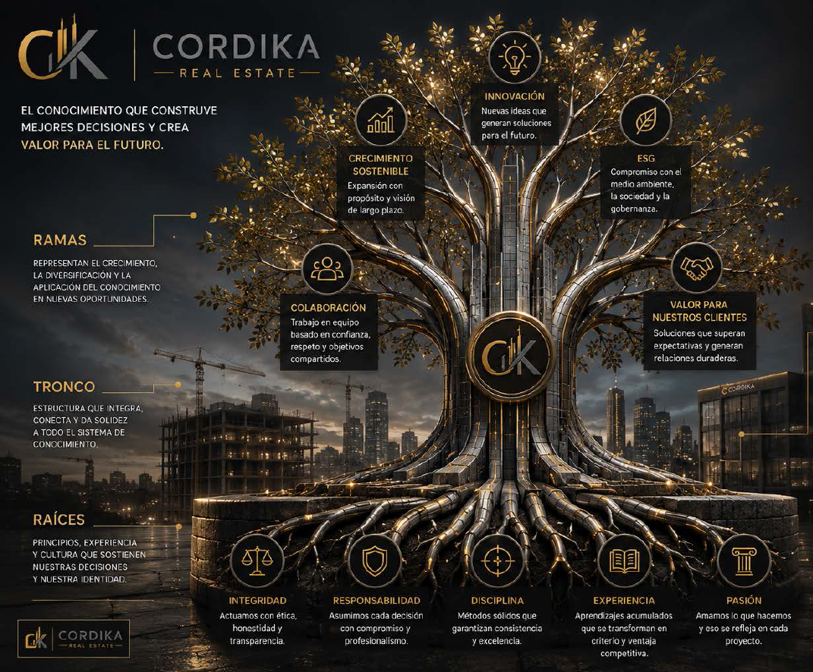

Lecciones aprendidas
Qué ocurrió, por qué ocurrió y qué estándar debe cambiar.
CORDIKA Knowledge System
CKS® transforma la experiencia de cada proyecto en criterios, estándares, herramientas y decisiones reutilizables.
El árbol CKS®

Qué ocurrió, por qué ocurrió y qué estándar debe cambiar.
Procesos claros para actividades críticas y repetibles.
Herramientas para planear, controlar, reportar y decidir.
Problemas reales, soluciones aplicadas y resultados obtenidos.
Conocimiento convertido en desarrollo de nuevos líderes.
Datos y experiencia organizados para responder mejor y más rápido.